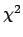

Next: Bibliography
Up: Interpretation of the errors
Previous: Non-linearities: MIGRAD versus HESSE
Index
Subsections
Multiparameter errors
In addition to the difficulties described above, a special class of
problems arise in interpreting errors when there is more than one
free parameter. These problems are quite separate from those
described above and are really much simpler in principle, although in
practice confusion often arises.
The Error Matrix
The error matrix, also called the covariance matrix, is the inverse of
the second derivative matrix of the (log-likelihood or chisquare)
function with respect to its free parameters, usually assumed to be
evaluated at the best parameter values (the function minimum). The
diagonal elements of the error matrix are the squares of the
individual parameter errors, including the effects of correlations
with the other parameters.
The inverse of the error matrix, the second derivative matrix, has as
diagonal elements the second partial derivatives with respect to one
parameter at a time. These diagonal elements are not therefore
coupled to any other parameters, but when the matrix is inverted,
the diagonal elements of the inverse contain contributions from all
the elements of the second derivative matrix, which is ``where the
correlations come from''.
Although a parameter may be either positively or negatively
correlated with another, the effect of correlations is always to
increase the errors on the other parameters in the sense that if a
given free parameter suddenly became exactly known (fixed), that
would always decrease (or at least not change) the errors on the
other parameters. In order to see this effect quantitatively, the
following procedure can be used to ``delete'' one parameter from the
error matrix, including its effects on the other parameters:
- 1.
- Invert the error matrix, to yield the second-derivative matrix.
- 2.
- Remove the row and column of the inverse corresponding to the
given parameter.
- 3.
- Re-invert the resulting (smaller) matrix.
This reduced error matrix will have its diagonal elements smaller or
equal to the corresponding elements in the original error matrix, the
difference representing the effect of knowing or not knowing the
true value of the parameter that was removed at step two. This
procedure is exactly that performed by Minuit when a FIX command
is executed. Note that it is not reversible, since information has
been lost in the deletion.
The Minuit commands RESTORE and
RELEASE therefore cause the error matrix to be considered lost and
it must be recalculated entirely.
The MINOS algorithm is described in some detail in part
1 of this manual. Here we add some supplementary ``geometrical
interpretation'' for the multidimensional case.
Let us consider that there are just two free parameters, and draw
the contour line connecting all points where the function takes on
the value
.
(The CONTOUR command will do this for you from Minuit).
For a linear problem, this contour line would be an
exact ellipse, the shape and orientation of which are described in
[5], p.196 (Fig. 9.4).
For our problem let the contour be as in figure 7.1.
If MINOS is requested to find the errors in parameter
one (the x-axis), it will find the extreme contour points A and B,
whose x-coordinates, relative to the x-coordinate at the minimum
(X), will be respectively the negative and positive MINOS errors of
parameter one.
For an n-parameter problem MINOS performs
minimizations in (n-1)
dimensions in order to find the extreme points of the hypercontour
of which a two-dimensional example is given in figure
7.1, and in this
way takes account of all the correlations with the other n-1
parameters.
However, the errors which it calculates are still only
single-parameter errors, in the sense that each parameter error is
a statement only about the value of that parameter.
This is
represented geometrically by saying that the confidence region
expressed by the MINOS error in parameter one is the grey
area of figure 7.2,
extending to infinity at both the top and bottom of the figure.
Figure 7.1:
MINOS errors for parameter 1
|
Figure 7.2:
MINOS error confidence region for parameter 1
|
If UP is set to the appropriate one-standard-deviation value,
then the precise meaning of the confidence region of figure
7.2 is: ``The probability
that the true value of parameter one lies between A and B is 68.3%''
(the probability of a normally-distributed parameter lying within
one std.-dev. of its mean).
That is, the probability content of the
grey area in figure 7.2 is 68.3%.
No statement is made about
the simultaneous values of the other parameter(s), since the grey
area covers all values of the other parameter(s).
If it is desired to make simultaneously statements about the values
of two or more parameters, the situation becomes considerably more
complicated and the probabilities get much smaller.
The first problem is
that of choosing the shape of the confidence region, since it is no
longer simply an interval on an axis, but a hypervolume. The easiest
shape to express is the hyperrectangle given by:
A < param 1 < B
C < param 2 < D
E < param 3 < F, etc.
This confidence region for our two-parameter example is the
grey area in figure 7.3.
However, there are two good reasons
not to use such a shape:
- 1.
- Some regions inside the hyperrectangle (namely the corners) have
low likelihoods, lower than some regions just outside the rectangle,
so the hyperrectangle is not the optimal shape (does not contain the
most likely points).
- 2.
- One does not know an easy way to calculate the probability
content of these hyperrectangles (see [5], p.196-197,
especially fig. 9.5a).
For these reasons one usually chooses regions delimited by contours
of equal likelihood (hyperellipsoids in the linear case). For our
two-parameter example, such a confidence region would be the grey
region in figure 7.4, and the corresponding probability
statement is: ``The probability that parameter one and parameter two
simultaneously take on values within the one-standard-deviation likelihood
contour is 39.3%''.
The probability content of confidence regions like those shaded in
figure 7.4 becomes very small as the number of parameters
NPAR increases, for a given value of UP.
Such probability contents are in
fact the probabilities of exceeding the value UP for a chisquare
function of NPAR degrees of freedom, and can therefore be read off
from tables of chisquare.
Table 7.1 gives the values of UP which
yield hypercontours enclosing given probability contents for given
number of parameters.
Figure 7.3:
Rectangular confidence region for parameters 1 and 2
|
Figure 7.4:
Optimal confidence region for parameters 1 and 2
|
Table 7.1:
Table of UP for multi-parameter confidence regions
| |
Confidence level |
| Nb. parameters |
(probability contents desired inside hypercontour
) |
| |
50% |
70% |
90% |
95% |
99% |
| 1 |
0.46 |
1.07 |
2.70 |
3.84 |
6.63 |
| 2 |
1.39 |
2.41 |
4.61 |
5.99 |
9.21 |
| 3 |
2.37 |
3.67 |
6.25 |
7.82 |
11.36 |
| 4 |
3.36 |
4.88 |
7.78 |
9.49 |
13.28 |
| 5 |
4.35 |
6.06 |
9.24 |
11.07 |
15.09 |
| 6 |
5.35 |
7.23 |
10.65 |
12.59 |
16.81 |
| 7 |
6.35 |
8.38 |
12.02 |
14.07 |
18.49 |
| 8 |
7.34 |
9.52 |
13.36 |
15.51 |
20.09 |
| 9 |
8.34 |
10.66 |
14.68 |
16.92 |
21.67 |
| 10 |
9.34 |
11.78 |
15.99 |
18.31 |
23.21 |
| 11 |
10.34 |
12.88 |
17.29 |
19.68 |
24.71 |
| |
For FCN
instead of ,
all values of
UP to be divided by 2. |
|
Next: Bibliography
Up: Interpretation of the errors
Previous: Non-linearities: MIGRAD versus HESSE
Index
Back to
CERN
| IT
| ASD
| CERN Program Library Home
MG
(last mod. 1998-10-30)